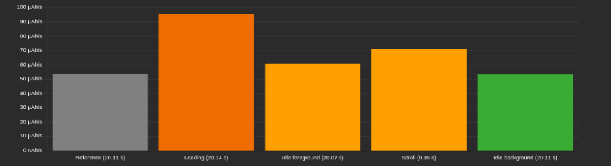
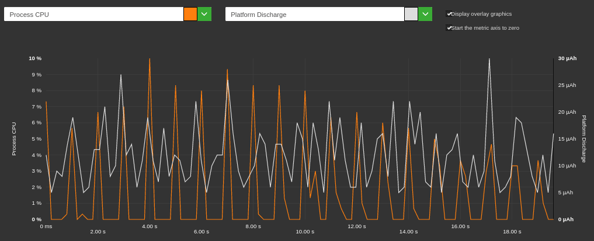
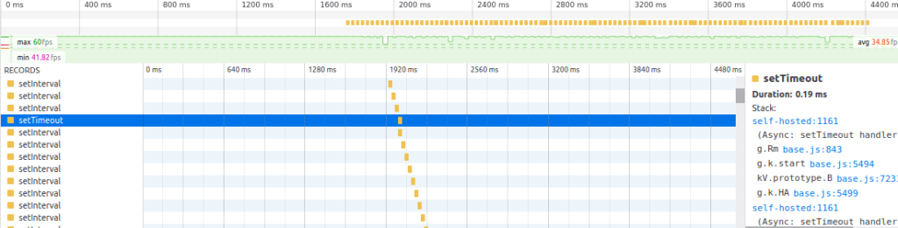
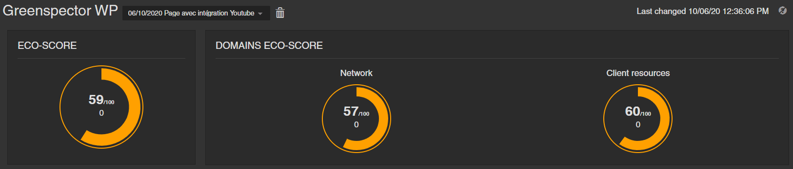
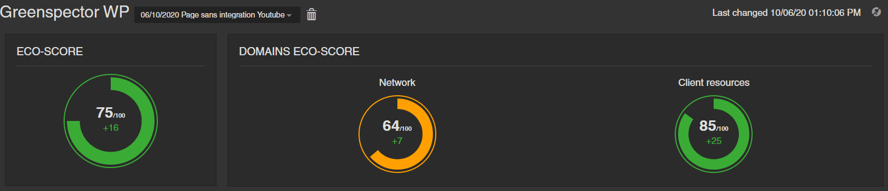
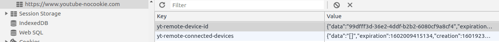
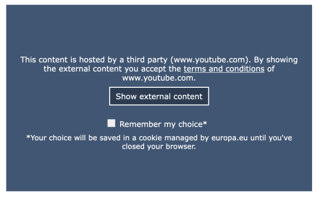

L’intégration de service tiers permet d’ajouter rapidement une fonctionnalité sur un site comme une vidéo ou l’intégration d’un réseau social (voir le cas de l’intégration Twitter). Les fournisseurs de ces outils ont travaillé pour que l’intégration technique soit simple et rapide. Et la technique est au rendez-vous. Mais à quel prix ?
Consommation d’énergie du service tiers Youtube
Nous observons sur nos mesures une augmentation de ce type de service tiers et des surconsommations anormales. C’est le cas de nombreux sites voire même de sites gouvernementaux.
L’intégration de YouTube est un bon cas d’étude pour expliciter cet effet. En seulement quelques lignes, il est possible d’afficher une vidéo sur n’importe quel site :
<iframe width= »560″ height= »315″ src= »https://www.youtube.com/embed/WoQHxxxxxxx-E?rel=0″ frameborder= »0″ allow= »autoplay; encrypted-media » allowfullscreen></iframe>
Mais quel est le résultat en termes d’impact chez l’utilisateur ? Voici le résultat que nous obtenons en termes de consommation d’énergie sur un smartphone Nexus 6 :

Référence : Vitesse de décharge en uAh/s du téléphone (OS, Navigateur…)
Loading : Vitesse des 20ères secondes de chargement
Idle Foreground : Vitesse du site inactive en premier plan
Scroll : Vitesse lors que l’utilisateur scroll / défile en bas de page
Idle Background : vitesse de décharge quand le navigateur (et donc le site) est en tâche de fond
Il s’agit d’un site gouvernemental. Les vitesses de décharge dépassent nos seuils pour beaucoup d’étapes. Pour le chargement, la vitesse est plus de 2 fois celle de référence. Pour l’idle foreground ou phase d’inactivité en premier-plan, la consommation devrait être identique à celle de référence. Cette consommation est anormale pour un site qui semble assez léger.

On voit que le process CPU de Chrome monte à 10% toutes les secondes. Cela explique la surconsommation d’énergie. En profilant les appels JavaScript dans les outils de développement, nous observons des traitements issus de base.js qui sont issus du framework YouTube :

À noter que ce traitement impacte aussi le scroll et le chargement. Est-ce un fonctionnement attendu ? Un bug ou une mauvaise implémentation ? Nous n’avons pas été jusque-là dans l’analyse.
Quand on regarde le chargement de la page, sur 1,2Mo, près de 600 ko sont utilisés pour le plugin YouTube. 50ko de CSS et 550ko de Javascript. Au traitement nécessaire, il faut ajouter l’usage important de CPU pour parser et exécuter les scripts.
Point notable : Aucune vidéo n’apparait sur cette page. L’intégration du plugin est surement nécessaire pour une autre page. Cela rend le gaspillage encore plus critique, cela est d’autant plus embêtant que le site testé est public et largement utilisé : Impots.gouv !
Bonnes pratiques d’intégration d’une vidéo
1 – Intégrer directement la vidéo sans services tiers
Il est possible d’utiliser des solutions libres et sans plugin. L’intégration via HTML5 est native : Introduction à la balise vidéo de HTML5.
2 – Intégrer une image
Afficher une image avec le même rendu que la vidéo permet de réduire à 1 requête. Si l’utilisateur clique sur la vidéo, alors les scripts seront chargés et la vidéo lancée, du lazy loading en fin de compte.
Nous avons par ailleurs fait l’exercice sur une page de notre site web Greenspector :
Exemple de gains sur une page Greenspector : de 59/100 à 75/100 d’écoscoreSur l’une de nos pages « Étude de cas » était intégrée une vidéo YouTube. Nous avons remplacé cette intégration par l’affichage d’une image (ci-contre) représentant l’ancienne vidéo intégrée. Cette modification nous a permis de passer d’un écoscore Greenspector de 59/100 à 75/100 caractérisé par un gain en énergie de -12% en étape de chargement, de -10% en Idle et -15% en scroll.


3 – Intégrer le plugin uniquement sur la page voulue
Une solution pas idéale mais préférable à l’existant, est de faire appel uniquement aux scripts que lorsque la page nécessite une vidéo.
Que cela va-t-il permettre de gagner ?
Tout d’abord la performance. Une grosse partie des traitements liés aux temps d’attente des sites est dédiée aux services tiers. C’est encore plus vrai pour le plugin YouTube. Sur le site audité, la taille peut être diminuée par 2 et le temps de chargement réduit d’au moins 30%.
La consommation d’énergie sera aussi réduite et d’une manière encore plus importante que la taille des données ou la performance. En effet, en plus de l’économie d’énergie du chargement, la consommation en idle ou phase d’inactivité sera réduite.
Bonus : vie privée de l’utilisateur
L’autre problème de ce type de projet est l’usage de tracker et de récupération de données utilisateur. Ne pas intégrer un services tiers permet de résoudre des potentiels problèmes de fuite de données et de non-respect RGPD. Au passage, le plugin YouTube permet une version a priori sans cookie via l’appel à l’URL : https://www.youtube-nocookie.com.
Comme tout service tiers, cela n’est pas si simple. Même avec cette intégration de no-cookie, des données utilisateurs sont stockées :

Le site audité n’est donc pas compatible RGPD ! Pour gérer cela, il faut demander le consentement à l’utilisateur explicitement :

La solution de la vidéo hébergée ou de l’image statique permettra aussi de gérer cela.
Conclusion
Si l’intégration d’une vidéo est nécessaire, réfléchissez-y tranquillement et prenez en compte les impacts sur la consommation de ressources et la RGPD. Il existe des solutions techniques plus respectueuses de l’utilisateur, elles sont dans un premier temps peut-être un peu plus complexes à mettre en place, cependant les solutions vont naturellement devenir plus simples et répandues.